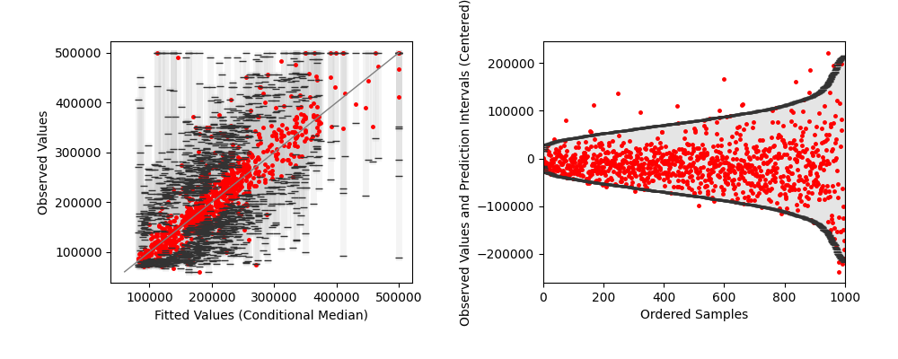

Note
Go to the end to download the full example code
Quantile regression forest prediction intervals
An example of how to use a quantile regression forest to plot prediction intervals on the California Housing dataset.
print(__doc__)
import matplotlib.pyplot as plt
import numpy as np
from matplotlib.ticker import FuncFormatter
from sklearn import datasets
from sklearn.model_selection import KFold
from sklearn.utils.validation import check_random_state
from quantile_forest import RandomForestQuantileRegressor
rng = check_random_state(0)
dollar_formatter = FuncFormatter(lambda x, p: "$" + format(int(x), ","))
# Load the California Housing Prices dataset.
california = datasets.fetch_california_housing()
n_samples = min(california.target.size, 1000)
perm = rng.permutation(n_samples)
X = california.data[perm]
y = california.target[perm]
qrf = RandomForestQuantileRegressor(n_estimators=100, random_state=0)
kf = KFold(n_splits=5)
kf.get_n_splits(X)
y_true = []
y_pred = []
y_pred_lower = []
y_pred_upper = []
for train_index, test_index in kf.split(X):
X_train, X_test, y_train, y_test = (
X[train_index],
X[test_index],
y[train_index],
y[test_index],
)
qrf.set_params(max_features=X_train.shape[1] // 3)
qrf.fit(X_train, y_train)
# Get predictions at 95% prediction intervals and median.
y_pred_i = qrf.predict(X_test, quantiles=[0.025, 0.5, 0.975])
y_true = np.concatenate((y_true, y_test))
y_pred = np.concatenate((y_pred, y_pred_i[:, 1]))
y_pred_lower = np.concatenate((y_pred_lower, y_pred_i[:, 0]))
y_pred_upper = np.concatenate((y_pred_upper, y_pred_i[:, 2]))
# Scale data to dollars.
y_true *= 1e5
y_pred *= 1e5
y_pred_lower *= 1e5
y_pred_upper *= 1e5
fig, (ax1, ax2) = plt.subplots(nrows=1, ncols=2, figsize=(10, 4))
y_pred_interval = y_pred_upper - y_pred_lower
sort_idx = np.argsort(y_pred)
y_true = y_true[sort_idx]
y_pred = y_pred[sort_idx]
y_pred_lower = y_pred_lower[sort_idx]
y_pred_upper = y_pred_upper[sort_idx]
y_min = min(np.minimum(y_true, y_pred))
y_max = max(np.maximum(y_true, y_pred))
y_min = float(np.round((y_min / 10000) - 1, 0) * 10000)
y_max = float(np.round((y_max / 10000) - 1, 0) * 10000)
for low, mid, upp in zip(y_pred_lower, y_pred, y_pred_upper):
ax1.plot([mid, mid], [low, upp], lw=4, c="#e0f2ff")
ax1.plot(y_pred, y_true, c="#f2a619", lw=0, marker=".", ms=5)
ax1.plot(y_pred, y_pred_lower, alpha=0.4, c="#006AFF", lw=0, marker="_", ms=4)
ax1.plot(y_pred, y_pred_upper, alpha=0.4, c="#006AFF", lw=0, marker="_", ms=4)
ax1.plot([y_min, y_max], [y_min, y_max], ls="--", lw=1, c="grey")
ax1.grid(axis="x", color="0.95")
ax1.grid(axis="y", color="0.95")
ax1.xaxis.set_major_formatter(dollar_formatter)
ax1.yaxis.set_major_formatter(dollar_formatter)
ax1.set_xlim(y_min, y_max)
ax1.set_ylim(y_min, y_max)
ax1.set_xlabel("Fitted Values (Conditional Median)")
ax1.set_ylabel("Observed Values")
y_pred_interval = y_pred_upper - y_pred_lower
sort_idx = np.argsort(y_pred_interval)
y_true = y_true[sort_idx]
y_pred_lower = y_pred_lower[sort_idx]
y_pred_upper = y_pred_upper[sort_idx]
# Center data, with the mean of the prediction interval at 0.
mean = (y_pred_lower + y_pred_upper) / 2
y_true -= mean
y_pred_lower -= mean
y_pred_upper -= mean
ax2.plot(y_true, c="#f2a619", lw=0, marker=".", ms=5)
ax2.fill_between(
np.arange(len(y_pred_upper)),
y_pred_lower,
y_pred_upper,
alpha=0.8,
color="#e0f2ff",
)
ax2.plot(np.arange(n_samples), y_pred_lower, alpha=0.8, c="#006aff", lw=2)
ax2.plot(np.arange(n_samples), y_pred_upper, alpha=0.8, c="#006aff", lw=2)
ax2.grid(axis="x", color="0.95")
ax2.grid(axis="y", color="0.95")
ax2.yaxis.set_major_formatter(dollar_formatter)
ax2.set_xlim([0, n_samples])
ax2.set_xlabel("Ordered Samples")
ax2.set_ylabel("Observed Values and Prediction Intervals")
plt.subplots_adjust(top=0.15)
fig.tight_layout(pad=3)
plt.show()
Total running time of the script: (0 minutes 4.224 seconds)